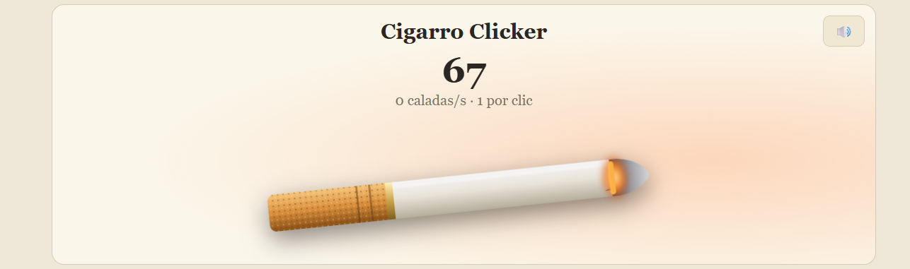

Guia del juego
Cigarro clicker es un juego de tiempo y paciencia. El juego se basa en clickear un cigarro para podr conseguir caladas. Esas caladas las gastas en mejoras y cada vez vas mejorando más y más hasta ser un experto fumador, o hasta que consigas una enfermedad de pulmón. El juego tiene 6 partes, que a continuación serán explicadas para saber como jugar.
La primera parte del juego es el ciggaro a clicar. Cuanto más lo clicas, más caladas consigues. De vez en cuando aparece un cigarro amarillo que mulytiplica las caladas por un tiempo. Arriba, hay un botón para desactivar el sonido y activarlo.
